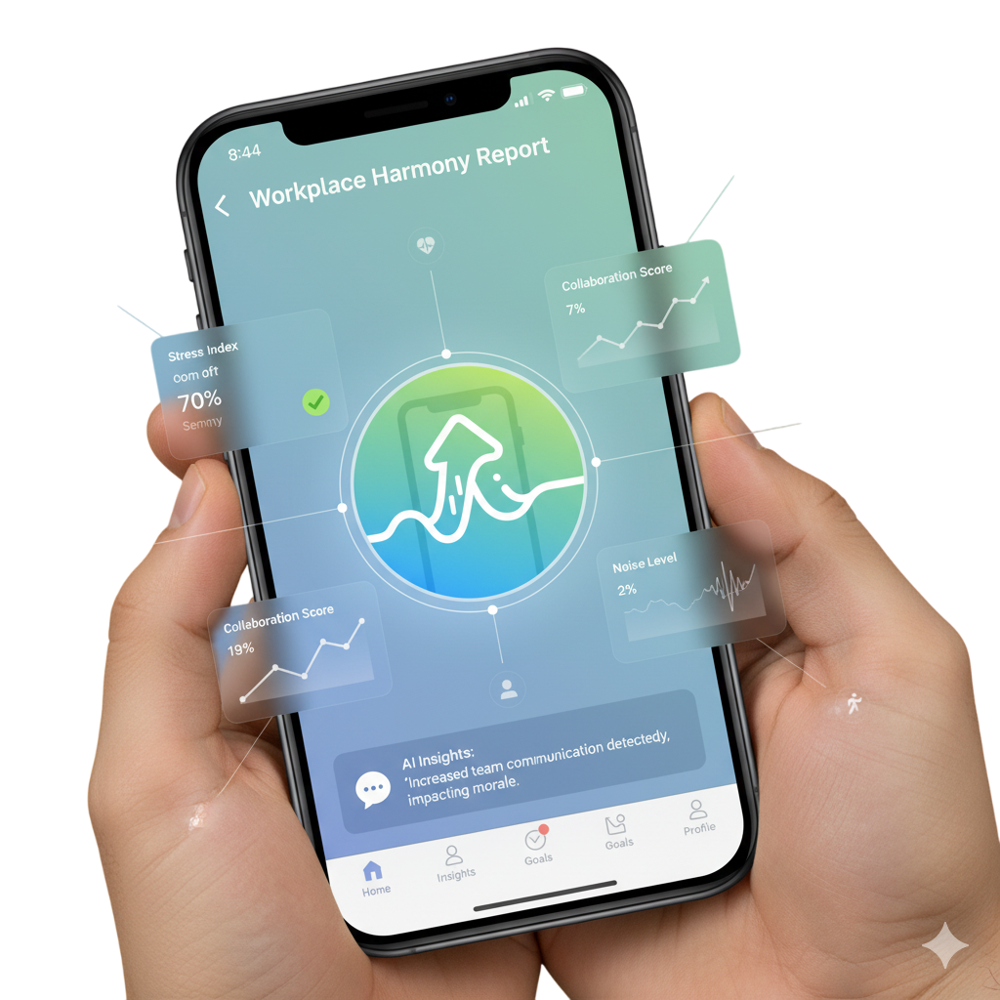

SenseWell
Tu compañero diario para cuidar tu energía en 3 pasos: selfie emocional, ruido ambiental y body scan.
*Demo local sin backend: credenciales guardadas en tu navegador.
Comencemos el día
¡Tómate una selfie! Detectaremos una emoción dominante (felicidad, neutral, enojo/estrés, tristeza, sorpresa).
Si no aparece el video, revisa permisos de cámara o abre en HTTPS.
Resultado
Emoción dominante: —
Confianza: —

Procesamiento en tu dispositivo (face-api.js). No subimos tu imagen.

Medición ambiental
Tomaremos una muestra de 5 segundos para estimar dB(A)* y darte recomendaciones.
*Aproximación desde dBFS del navegador con calibración.
Resultados de tus mediciones
Aquí aparecerá el resumen de tu estado.
Tu indicador actual
Tabla de referencia de dB(A) en oficina
Body Scan (3 zonas)
(1 = relajado, 10 = máxima tensión)